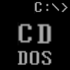

CD-DOS
Добро пожаловать в CD-DOS
CD-DOS — это DOS-подобная операционная система, написанная на чистом Assembler. Она сочетает классический интерфейс с возможностями мониторинга железа.
CD-DOS Bootloader v1.0
Loading kernel... OK
CD-DOS Advanced v2.0
Copyright (c) 2024 CD-Soft
CD-DOS> HELP
=== CD-DOS Command List ===
CLEAR, DIR, RAM, CP, SDDOS...
Ключевые особенности
Чистый Assembler
Полностью написана на ассемблере x86 для максимальной производительности и минимального размера
Мониторинг железа
Определение частоты CPU, температуры, информации о видеоадаптере и статуса портов
Файловая система
Поддержка FAT12, работа с файлами и директориями, управление атрибутами
Сетевые возможности
Встроенная поддержка сетевых команд (PING, NETSTAT) и расширяемый стек
Команды CD-DOS
Базовые команды
- CLEAR/CLS - Очистка экрана
- DIR - Просмотр файлов
- RAM - Свободная память
- CP - Частота CPU
- SDDOS/VER - Версия системы
- HELP - Справка
Управление дисками
- FORMAT - Форматирование
- CHKDSK - Проверка диска
- LABEL - Метка диска
Мониторинг железа
- TEMP - Температура CPU
- GPU - Инфо о видеоадаптере
- IOSTAT - Статус портов ввода/вывода
Файловые операции
- DEL - Удаление файла
- REN - Переименование
- ATTR - Изменение атрибутов
Управление процессами
- TASKL - Список процессов
- KILL - Завершение процесса
Сетевые команды
- PING - Проверка соединения
- NETSTAT - Активные порты
Скриншоты

Загрузка системы CD-DOS

Выполнение команд в CD-DOS

Информация о системе
Системные требования
Минимальные:
• CPU: 8086+
• RAM: 512 KB
• Диск: 1.44 MB Floppy
• Видео: CGA/VGA
• CPU: 8086+
• RAM: 512 KB
• Диск: 1.44 MB Floppy
• Видео: CGA/VGA
Рекомендуемые:
• CPU: 386+
• RAM: 2 MB
• Диск: HDD или Floppy
• Видео: VGA
• CPU: 386+
• RAM: 2 MB
• Диск: HDD или Floppy
• Видео: VGA
Для эмуляции:
• QEMU
• VirtualBox
• DOSBox
• Bochs
• QEMU
• VirtualBox
• DOSBox
• Bochs
Скачать CD-DOS
Версия 2.0 — Стабильный релиз
📥 Скачать CD-DOS.IMG (1.44 MB) 📚 Скачать исходный кодРазмер: 1.44 MB | Дата: Январь 2024 | Лицензия: Open Source
Быстрый старт (QEMU)
qemu-system-x86_64 -fda CD-DOS.IMG
qemu-system-i386 -fda CD-DOS.IMG